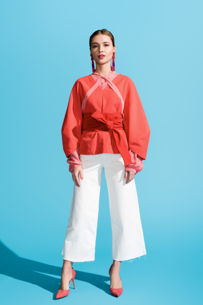

| ID | Construction | Illustration |
|---|---|---|
| 1839 | таким образом, Cl | Таким образом, наша команда за год добилась важных результатов. |
| 1100 | как бы то ни было, Cl | На новой клавиатуре клавиши расположены странно. Как бы то ни было, к этому быстро привыкаешь. |
| 836 | в целом Cl | В целом кино достойно просмотра. |
| 308 | словом, Cl | Словом, я хочу её видеть. |
| 1870 | (да) и вообще, Cl | Да и вообще, я слишком занят. |
| 107 | дело Cop не в NP-Loc (, а в NP-Loc) | Дело не в опозданиях. |
| 2311 | Cl, и на том спасибо | Не обижают, и на том спасибо. |
| 64 | вот и Pred! | Вот и чудесно! |
| 759 | в заключение Cl | В заключение я хочу поблагодарить всех сотрудников нашей фирмы. |
| 1957 | Итак, Cl | Итак, мы вкратце рассказали об особенностях двух культур. |
Cl = clause, sentence (предложение)
Cop = copula verb быть (связочный глагол быть)
NP = noun phrase (существительное)
Loc = Locative case (локатив)
Pred = predicative (предикатив, то есть прилагательное в краткой форме)
Русский конструктикон содержит информацию обо всех конструкциях урока
https://constructicon.github.io/russian/
| 1. Для поездки за границу нужно сделать
загранпаспорт, получить визу, купить билеты и
спланировать маршрут. 2. В Санкт-Петербурге много музеев, парков, дворцов и храмов. За день их все не посмотреть. 3. Чтобы сделать визу в Норвегию, нужно много времени и денег, а у русских мало и того, и другого. 4. Я потеряла паспорт, а Соня не смогла улететь домой, потому что её рейс отменили. |
а. Туда лучше ехать на
несколько дней. б. Мы вместе остались на каникулы в общежитии. в. Готовиться к путешествию нужно заранее. г. В Норвегию русские туристы приезжают нечасто. |
Образец:
| Кто? | Что делал? |
| Леонид | выспался сходил на море сходил на футбольный матч |
Леонид выспался, сходил на море и на футбольный матч. В целом день прошёл хорошо.
| Кто? | Что делал? |
| Евгения | отдохнула сходила в спа посмотрела фильм |
| Кто? | Что делал? |
| Наташа и Андрей | потеряли ключи от квартиры опоздали на поезд замёрзли на прогулке |
| Кто? | Что делал? |
| Дима | приготовил вкусный ужин посмотрел новый фильм купил новый диван |
Кого поздравить:
Конструктор поздравлений:
| (Дорогой/Дорогая) + имя! (Уважаемый/Уважаемая) + имя + отчество! |
Поздравляю тебя/Вас/вас с + Ins
|
Желаю тебе/Вам/вам + Gen
|
Пусть + Fut
|
Словом,
|
1. ― Вам плохо? Давайте, я понесу Вашу сумку.
― Нет, спасибо! Мне уже лучше, ___________________, я вас совсем не знаю!
2. ― Тебе больше нельзя так жить и постоянно заедать* стресс шоколадом! ___________________, тебе надо найти другую работу!
заедать стресс* ― English: eat in response to stress; Norwegian: trøstespise
3. ― Вы давно были у окулиста? Сколько вам лет?
― Я же дама, и это невежливый вопрос. ___________________, я уже не помню...
4. ― Доктор, я плохо себя чувствую. У меня болит рука, нога, нос, голова... ___________________, у меня всё болит.
Образец
― Как у тебя дела? У меня ...
― А у тебя как дела? У меня ...
| Шкала проблем | |||
|---|---|---|---|
| У меня ... | Мало того, ... | Ко всему прочему, ... | И вообще, ... |
|
часто болит голова много работы скоро экзамен по русскому языку |
проблемы на работе много дел я недавно болел гриппом |
приехал друг сломалась машина нужно переезжать в другую квартиру |
всë плохо! всë сложно! много сюрпризов! хорошего мало, но всë будет хорошо! |
1. У Антона хорошая работа, большой дом. Недавно он купил дорогую машину. Не знаю, новую или нет. _______________ денег у него много, поэтому он может купить любую.
2. Я люблю ходить к Ивановым в гости. У них дома всегда тепло и уютно. _____________ они очень гостеприимные.
3. Учёные провели эксперимент и узнали, что новое лекарство от кашля намного эффективнее старого. ______________ теперь нам будет легче лечиться при коронавирусе.
4. Сейчас болеют очень много людей. Власти говорят, что ______________ ситуация под контролем, но все равно нам нужно быть осторожными.
| 1. Соня опять пересолила* суп. 2. Паша снова съел шоколадку вместо ужина. 3. Я выпил(а) уже 3 кружки кофе за утро. 4. У моего брата сильная аллергия на цитрусовые. 5. Муж опять забыл убрать молоко в холодильник, и оно испортилось. |
а. Что-то поел. б. Никто это молоко не выпил. в. Со сметаной есть можно. г. Не пиво. д. Он может есть остальные фрукты. |
*пересолить — English: to put too much salt; Norwegian:
Образец:
— Ждём вас на обед к двум. Придёте?
— Да.
— _____________________(чудесный)!
Ответ: Вот и чудесно!
а.
— Будешь чай?
— Да.
— _____________________(отличный)!
б.
— Как вам ужин?
— Ужин нам очнь понравился!
— _____________________(замечательный)!
в.
— У вас есть клубника?
— Да.
— _____________________(прекрасный)!
Образец:
— А насчёт горячего — что мы будем готовить?
— Я хочу лазанью. А ты?
— Я тоже.
— Вот и чудесно!
| А насчёт + NP-Gen | закуски суп горячее гарнир десерт |
— что мы будем готовить? |
| Вот и | славно отлично хорошо замечательно чудесно прекрасно |
|
Образец:
Заметки:
Запечённое мясо: Не специи -> Мясо (несвежее).
—>
Запечённое мясо плохо получилось. И дело не в специях, а в мясе. Оно было несвежее.
а.
Яблочный пирог: Не мукa -> Время приготовления. Пирог не пропёкся.
мукa — English: flour; Norwegian: mel
время приготовления — English: cooking time; Norwegian: tiden brukt til å bake eplekake
б.
Блины: Не тесто -> масло, слишком много
тесто — English: dough; Norwegian: deig
масло — English: butter; Norwegian: smør
в.
Шоколадный торт: Не сливки для крема -> Сахар. Нужна сахарная пудра.
сливки — English: dairy cream; Norwegian: fløte
г.
Эспрессо: Не сорт кофе -> обжарка, слишком светлая
обжарка — English: roast (about coffee); Norwegian: kaffebrenning (brenningsgrad når det gjelder kaffe)
д.
Овощной салат: Не овощи -> оливковое масло, слишком старое
оливковое масло — English: olive oil; Norwegian: olivenolje
Образец:
В заключение хочу добавить, что эта награда — результат отличной работы всех наших
сотрудников.
В заключение, мы продолжим радовать вас нашими платьями.
| В заключение | хочу добавить, что | теперь мы будем производить ещё и обувь! |
| хочется подчеркнуть, что | эта награда очень важна для нашего бренда. | |
| мне бы хотелось сказать, что | мы продолжим радовать вас нашими платьями. | |
| можно сказать, что | эта награда — результат отличной работы всех наших сотрудников. | |
| важно упомянуть, что | наш бренд молодой и эта награда — только начало большого пути. | |
| , мы гордимся этой наградой и благодарим всех за поддержку нашего бренда! | ||
Образец:
Итак, в этом сезоне люди будут носить блузки ярких цветов. Например, красные.
Итак, в этом сезоне будут в моде блузки ярких цветов. Например, красные.
Итак, в этом сезоне будет модно носить блузки ярких цветов. Например, красные.
 |
 |
 |
 |
 |